Menggunakan Aplikasi OSMTracker
Download page as PDFTujuan Pembelajaran:
- Menjelaskan OSMTracker sebagai salah satu alat mengambil rute perjalanan dan pengambilan gambar objek
- Mengoperasikan cara pengaturan awal untuk OSMTracker
- Menerapkan cara penggunaan OSMTracker
1. Apa itu OSMTracker?
OSMTracker adalah sebuah aplikasi android yang memungkinkan kita untuk mengambil data saat melakukan saat survei lapangan. Sama seperti GPS, OSMTracker mampu untuk merekam waypoint dan juga track survei. Jika Anda ingin mengetahui tentang penggunaan GPS untuk survei lapangan, silakan Anda lihat Modul Penggunaan GPS. Salah satu keunggulan yang dimiliki oleh OSMTracker adalah adanya fitur pengambilan foto objek pada saat melakukan survei. Foto ini akan mempermudah Anda pada saat melakukan pemetaan sehingga Anda dapat melihat kembali objek apa yang telah Anda survei. Hasil dari titik dan jalur survei yang telah diambil dapat diubah ke dalam bentuk file .gpx sehingga Anda dapat dengan mudah membuka data hasil survei Anda menggunakan aplikasi JOSM ataupun dapat langsung mengunggahnya ke dalam OpenStreetMap.
Untuk dapat menggunakan OSMTracker Anda harus melakukan instalasi terlebih dahulu melalui Playstore. Anda dapat membuka aplikasi Google Playstore di perangkat smartphone Anda kemudian ketik “OSMTracker” pada kolom pencarian.

Aplikasi OSMTracker dapat Anda download di Google Playstore
Jika sudah selesai terpasang, silakan Anda buka aplikasi OSMTracker pada smartphone Anda.
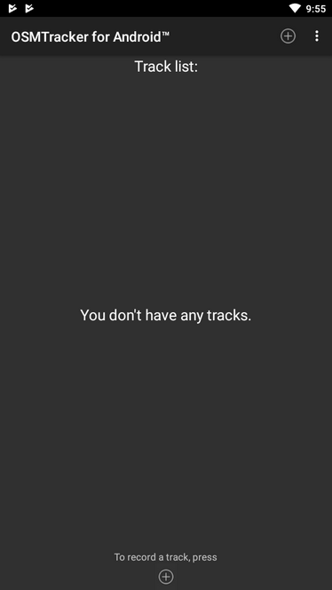
Tampilan awal aplikasi OSMTracker
2. Pengaturan Awal OSMTracker
Sebelum Anda dapat menggunakan OSMTracker, ada beberapa pengaturan dasar yang harus Anda lakukan. Untuk dapat masuk ke dalam menu pengaturan silakan Anda pilih menu tombol
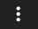 di sebelah kanan atas kemudian pilih Settings.

Memilih menu Settings di aplikasi OSMTracker
Pada halaman settings ada beberapa pengaturan yang perlu diperhatikan, seperti:
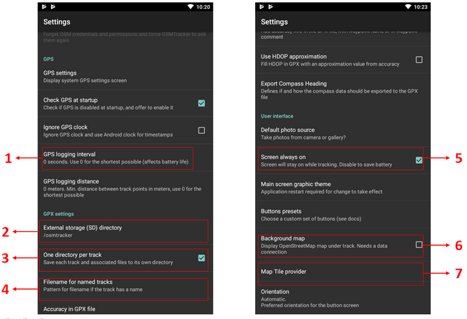
Beberapa pengaturan pada halaman Settings
GPS logging interval
Pengaturan ini menentukan seberapa sering OSMTracker merekam track Anda. Semakin kecil angkanya maka semakin sering OSMTracker akan melakukan perekaman. Pengaturan awal adalah 0 detik, artinya setiap saat OSMTracker akan secara terus menerus melakukan perekaman trek. Hal ini tentunya akan sangat menghabiskan baterai perangkat smartphone Anda. Ubahlah interval perekaman sesuai kebutuhan, misalnya menjadi 2 detik.External storage (SD) directory
Pengaturan ini dilakukan untuk menentukan dimana Anda akan menyimpan seluruh hasil survei di dalam perangkat smartphone. OSMTracker secara otomatis akan membuat folder baru bernama “osmtracker” di penyimpanan internal perangkat Anda. Anda tidak perlu mengganti pengaturan ini apabila tidak perlu.One directory per track
Jika Anda mengaktifkan fitur ini, maka setiap track yang Anda simpan akan membentuk sebuah folder baru di dalam folder OSMTracker.Filename for named track
Pengaturan ini menetapkan bagaimana pola nama file dari hasil survei Anda. Pengaturan awal adalah nama track, tanggal dimulai, dan waktu pengambilan. Anda bisa mengabaikan pengaturan ini jika Anda tidak ingin mengubah pola penamaan file Anda.Screen always on
Dengan mengaktifkan fitur ini, Anda akan membiarkan perangkat smartphone Anda untuk terus menyala ketika Anda menggunakan OSMTracker. Namun perlu diingat bahwa jika Anda mengaktifkan fitur ini maka baterai smartphone Anda juga akan semakin cepat habis.Background map
Pengaturan ini digunakan untuk menampilkan background peta pada tampilan track Anda. Aktifkan pengaturan ini sehingga Anda dapat melihat hasil track Anda dengan tampilan peta sebagai latar belakangnya.Map tile provider
Anda bisa mengubah tampilan latar belakang peta Anda melalui fitur ini.
Setelah semua pengaturan telah selesai dilakukan, Anda telah siap menggunakan OSMTracker. Jangan lupa untuk mengaktifkan fitur Location atau GPS yang ada di smartphone Anda. Setelah itu, silakan Anda kembali ke tampilan menu utama OSMTracker. Jika Anda baru pertama kali menggunakan OSMTracker maka halaman utama Anda masih akan kosong. Seluruh hasil survei yang telah Anda lakukan nantinya akan muncul di halaman utama.
3. Pengoperasian Dasar OSMTracker
Merekam Rute Perjalanan
Untuk dapat mulai melakukan perekaman rute perjalanan atau perekaman jalur, silakan Anda pilih tombol bertanda + yang ada di sebelah kanan atas layar. Setelah itu akan muncul tampilan Track Logger.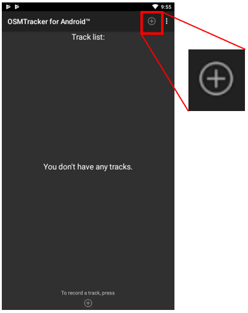
Tombol dengan icon + yang digunakan untuk melakukan perekaman jalur atau merekam perjalanan Anda
Satu hal penting yang perlu Anda perhatikan adalah tingkat keakurasian GPS. Seluruh fitur yang ada di track logger tidak akan dapat Anda akses jika smartphone Anda belum mendapatkan sinyal GPS dengan baik. Usahakan mendapatkan akurasi GPS semaksimal mungkin (accuracy di bawah 10 meter) untuk menghindari kesalahan perekaman posisi yang dilakukan pada saat survei. Indikator sinyal GPS dapat dilihat pada signal bar yang ada di sebelah kanan atas layar OSMTracker Anda (lihat gambar). Sinyal akan semakin baik apabila indikator signal bar semakin penuh dan berwarna hijau, sedangkan sinyal semakin buruk jika indikator ini masih belum terisi. Semakin penuh indikator sinyal akan semakin baik penangkapan sinyal GPS Anda. Untuk mendapatkan sinyal yang baik, posisikan diri Anda berada di luar ruangan dan tidak terhalang benda apapun seperti atap bangunan atau pepohonan lebat.
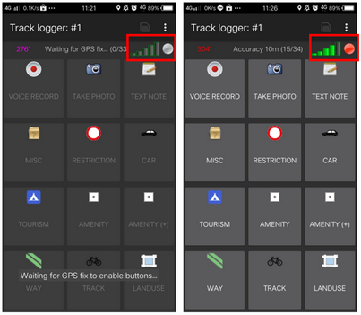
Fitur track logger belum bisa diakses karena smartphone belum menangkap GPS dengan baik (Kiri); Fitur track logger dapat diakses setelah smartphone menangkap GPS (Kanan)
Ketika GPS sudah berhasil menangkap sinyal dengan baik, maka yang perlu Anda lakukan adalah mulai berjalan sesuai dengan rute survei Anda. Setelah Anda menekan tombol + dan smartphone Anda telah menangkap GPS dengan baik, maka OSMTracker secara otomatis telah merekam rute perjalanan atau jalur perjalanan Anda.
Merekam Objek dengan Titik dan Gambar
Ada beragam tombol yang terdapat di dalam track logger, namun untuk mengambil titik survei atau waypoint, Anda cukup menggunakan 2 tombol berikut:
Halaman Track Logger pada OSMTracker
Text Note
Text note digunakan untuk mengambil titik atau waypoint pada saat melakukan survei. Jika Anda sudah berada di titik yang ingin Anda rekam, Anda cukup menekan tombol ini kemudian isi dengan keterangan yang Anda inginkan. Sebagai contoh, Anda dapat menggunakan penomoran diikuti dengan keterangan objeknya.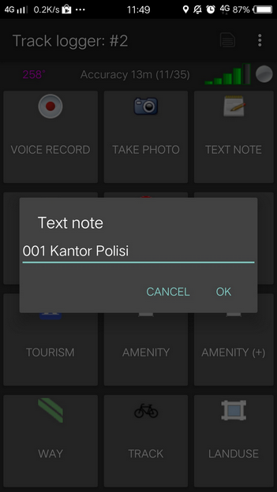
Contoh penggunaan Text Note untuk merekam titik survei
Take Photo
Take Photo digunakan untuk mengambil gambar objek yang Anda survei. Anda dapat mengambil gambar secara langsung menggunakan kamera ataupun dapat mengambilnya dari galeri foto Anda.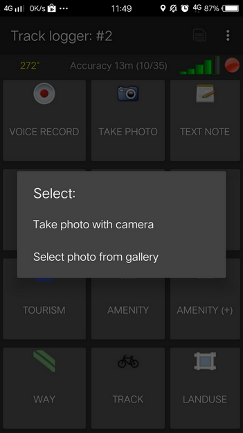
Anda dapat memilih untuk mengambil foto langsung menggunakan kamera atau memilih foto dari galeri foto Anda
Menghentikan Sementara dan Memulai Kembali Mode Rekam Rute Perjalanan
Untuk berhenti melakukan perekaman trek, Anda dapat mengikuti langkah-langkah berikut:
Pada halaman Track logger, silakan Anda kembali ke halaman utama, kemudian temukan satu file track yang telah Anda kumpulkan. Pada file tersebut silakan Anda tekan dan tahan beberapa saat hingga muncul menu tambahan.
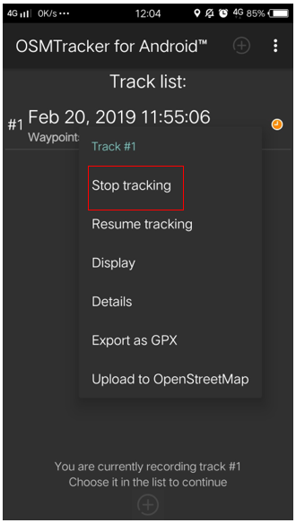
Pilihan untuk menghentikan perekaman jalur (Stop tracking)
Pilih menu Stop tracking.
Anda juga dapat menggunakan tombol
 yang berada di sebelah kanan atas halaman Track logger Anda untuk berhenti melakukan perekaman dan menyimpan hasil perekaman Anda.
yang berada di sebelah kanan atas halaman Track logger Anda untuk berhenti melakukan perekaman dan menyimpan hasil perekaman Anda.
Jika Anda ingin melanjutkan kembali perekaman trek yang sudah Anda kumpulkan, langkah-langkah yang perlu Anda lakukan adalah:
Pada file yang ingin Anda lanjutkan track-nya silakan Anda tekan dan tahan beberapa saat hingga muncul menu tambahan
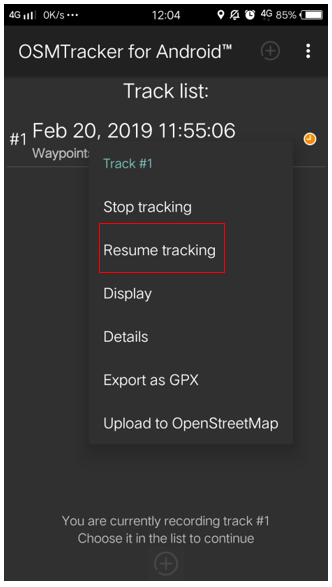
Pilihan untuk melanjutkan kembali perekaman jalur (Resume tracking)
Kemudian pilih Resume Tracking
Catatan :
Jika File Anda memiliki ikon atau tanda jam berwarna oranye di sebelah kanan nama file menandakan bahwa file tersebut masih dalam mode perekaman jalur. Ikon ini akan hilang jika Anda telah menghentikan mode perekaman jalur.

Melihat Daftar Objek yang Dikumpulkan
Anda dapat melihat objek-objek apa saja yang telah Anda kumpulkan pada saat survei. Pada halaman Track logger pilih tombol yang berada di sebelah kanan atas, kemudian pilih Waypoints.
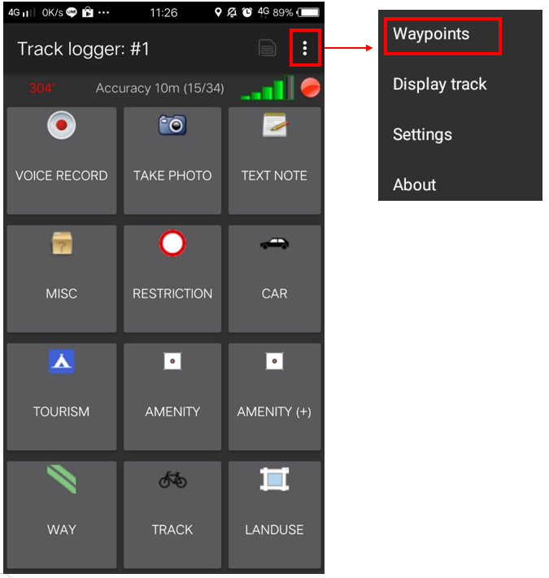
Tombol untuk menampilkan daftar waypoints yang telah dikumpulkan
Anda akan melihat daftar titik serta foto yang telah berhasil Anda kumpulkan pada halaman Waypoint list.

Halaman Waypoint list untuk melihat daftar objek yang telah dikumpulkan
Melihat Rute Perjalanan dan Objek yang Dikumpulkan pada Peta
Anda juga dapat melihat sejauh apa rute perjalanan yang telah Anda lewati dan titik-titik objek yang telah dikumpulkan. Pada halaman Track logger pilih menu di sebelah kanan atas, kemudian pilih Display Track.

Tombol untuk melihat rute perjalanan dan objek yang telah dikumpulkan
Pada saat menampilkan menu Display Track, OSMTracker akan bertanya apakah Anda mengizinkan akses untuk menampilkan peta. Pilih Display Background Map.

Pilihan untuk menampilkan latar belakang peta
Anda akan melihat tampilan halaman peta dengan simbol garis, bintang, dan orang di atasnya. Simbol bintang ini menunjukkan titik-titik yang telah Anda survei, sedangkan simbol garis menunjukkan rute perjalanan yang telah Anda lewati. Simbol orang menunjukkan lokasi Anda saat ini.
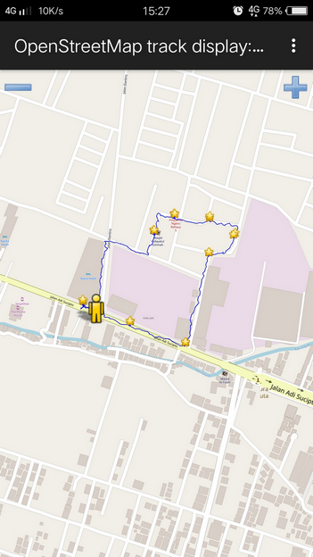
Contoh hasil rute perjalanan dan titik survei yang sudah diambil pada saat survei
Menyimpan OSMTracker
Setelah Anda melakukan survei lapangan, Anda tentu ingin menyimpan data hasil survei Anda untuk kemudian Anda gunakan sebagai acuan pada saat melakukan pemetaan. Untuk itu, data hasil survei yang telah berhasil Anda kumpulkan dapat Anda simpan sebagai data .gpx, upload ke dalam server OpenStreetMap, atau Anda pindahkan ke dalam laptop.
Menyimpan Rute Perjalanan dan Objek sebagai Data .gpx
Anda dapat menyimpan rute perjalanan dan objek yang telah Anda survei ke dalam format data .gpx. Data .gpx dapat Anda pakai ketika Anda menggunakan aplikasi pemetaan seperti QGIS maupun JOSM. Pada file survei Anda, silakan Anda tekan dan tahan kemudian pilih menu Export as GPX. Jika file data survei telah berhasil disimpan dalam bentuk .gpx, maka akan muncul bulatan warna hijau di sebelah kanan nama file.
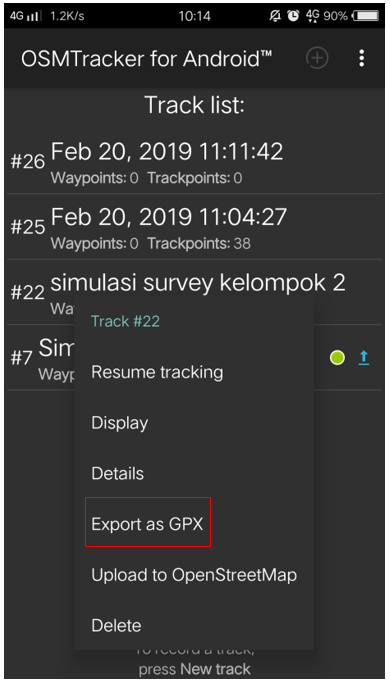
Menu untuk menyimpan data survei ke dalam file GPX
Mengunggah (Upload) Rute Perjalanan ke Server OpenStreetMap
Anda juga dapat meng-upload data hasil survei ke dalam server OpenStreetMap. Pada file hasil survei Anda, ketuk dan tahan beberapa saat, kemudian pilih Upload to OpenStreetMap.
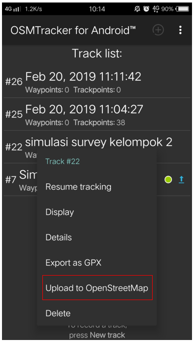
Menu untuk mengunggah hasil survei ke dalam server OpenStreetMap
Pada halaman OpenStreetMap Upload Anda akan diminta untuk mengisi beberapa isian seperti nama dan deskripsi file. Pada isian Tags bisa Anda abaikan. Pada bagian paling bawah, Anda dapat mengatur sifat dari trek yang akan Anda unggah sepeti private, public, trackable, dan identifiable.
Private
Track tidak akan terlihat pada daftar track publik. Trackpoints dapat diakses pada urutan waktu melalui API GPS publik tanpa cap waktu.
Public
Track Anda akan terlihat untuk publik (umum) pada track GPS Anda dan pada daftar track GPS publik. Pengguna lain masih dapat mengunduh track Anda dari daftar track publik serta waktu pengambilan titik yang termuat di dalamnya. Namun, data yang tampil pada API tidak mereferensikan pada halaman track Anda
Trackable
Track tidak akan terlihat pada daftar track publik, namun trackpoints akan tetap dapat diakses melalui API GPS publik bseserta waktu pengambilan titiknya. Pengguna lain tetap dapat mengunduh trackpoints tapi tidak akan direferensi/dikaitkan dengan Anda
Identifiable
Track Anda akan terlihat untuk publik (umum) pada track GPS Anda dan pada daftar track GPS publik. Pengguna lain dapat mengunduh track Anda dan menghubungkannya dengan username Anda. Waktu pengambilan titik-titik pada track juga dapat diakses melalui GPS API publik.
Untuk pemilihan sifat track, Anda dapat memilih Trackable atau Public sehingga hasil upload Anda dapat terlihat oleh pengguna lain.
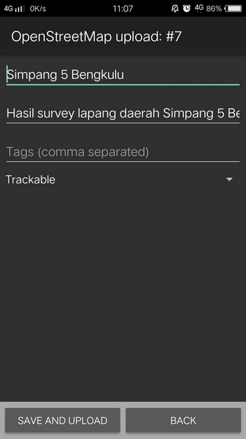
Contoh file hasil survei yang telah siap diunggah ke dalam server OpenStreetMap
Mengambil Rute Perjalanan dan Titik ke Laptop/Komputer
Seluruh data yang sudah diekspor ke dalam data .gpx akan tersimpan ke dalam folder internal smartphone Anda. Anda dapat mencari data tersebut dengan menggunakan aplikasi file manager Anda. Untuk dapat memindahkan data tersebut silakan ikuti langkah-langkah berikut:
Hubungkan smartphone Anda ke laptop dengan menggunakan kabel data kemudian cari folder bernama “osmtracker” di media penyimpanan smartphone Anda.
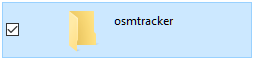
Folder OSMTracker di media penyimpanan smartphone Anda
Dalam folder OSMTracker Anda akan menemukan satu folder yang berisi data dengan format .gpx dan data foto. Silakan Anda kemudian pindahkan satu folder yang berisi data tersebut ke dalam laptop Anda.
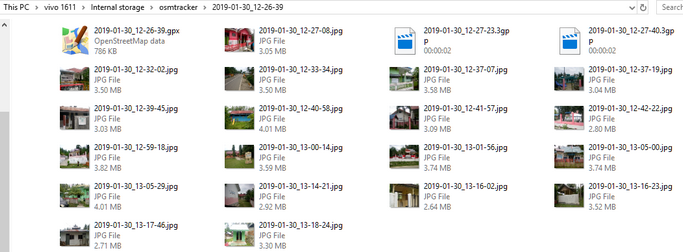
Contoh data OSMTracker yang berisikan file data .gpx dan foto-foto survei
Buka aplikasi JOSM Anda, kemudian masukkan file GPX tersebut ke dalam JOSM. Anda dapat membukanya dengan cara File → Open, kemudian buka file dengan format .gpx.
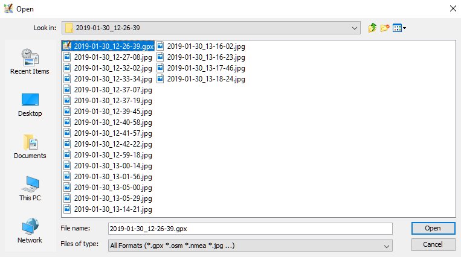
Silakan Anda buka file dengan format .GPX pada JOSM
Pada saat Anda membuka file .gpx tersebut maka secara otomatis JOSM akan menampilkan rute perjalanan dan titik hasil survei lengkap dengan objek foto yang telah berhasil dikumpulkan.
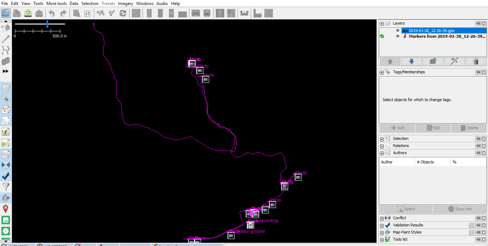
Contoh hasil data survei pada saat dibuka menggunakan JOSM
Hasil rute perjalanan dan juga titik objek yang telah Anda survei ini dapat Anda gunakan sebagai acuan pada saat Anda memetakan menggunakan JOSM. Anda tidak perlu bingung lagi objek apa yang sedang Anda petakan karena Anda telah melakukan survei lapangan dan melakukan pengambilan foto objek yang Anda survei.
RINGKASAN Pada bab ini Anda telah mengetahui salah satu metode survei lapangan dengan menggunakan OSMTracker, dimana OSMTracker dapat Anda gunakan untuk melakukan perekaman rute perjalanan, titik survei dan melakukan pengambilan foto objek. Anda juga telah mempelajari bagaimana cara melakukan pengaturan awal dan cara menggunakan OSMTracker. Anda dapat menggunakan OSMTracker sebagai alternatif alat survei jika Anda tidak memiliki GPS.